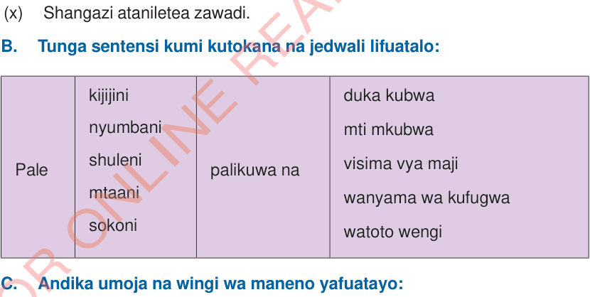

B.
Tunga sentensi kumi kutokana na jedwali lifuatalo:| Pale | kijijininyumbanishulenimtaanisokoni | palikuwa na | duka kubwamti mkubwavisima vya majiwanyama wa kufugwawatoto wengi |
Pale
kijijininyumbanishulenimtaanisokoni
palikuwa na
duka kubwamti mkubwavisima vya majiwanyama wa kufugwawatoto wengi
